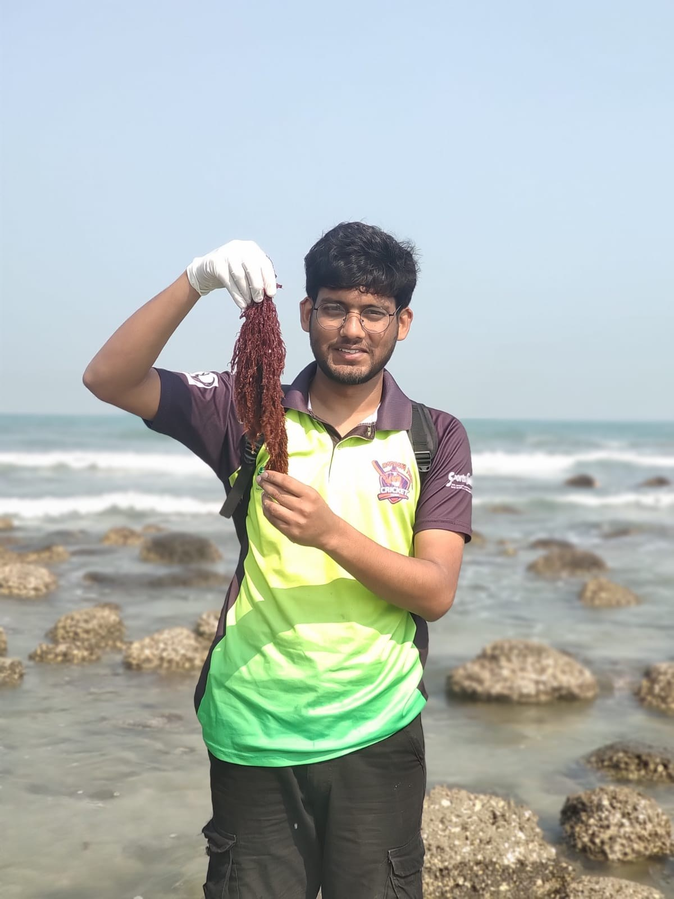
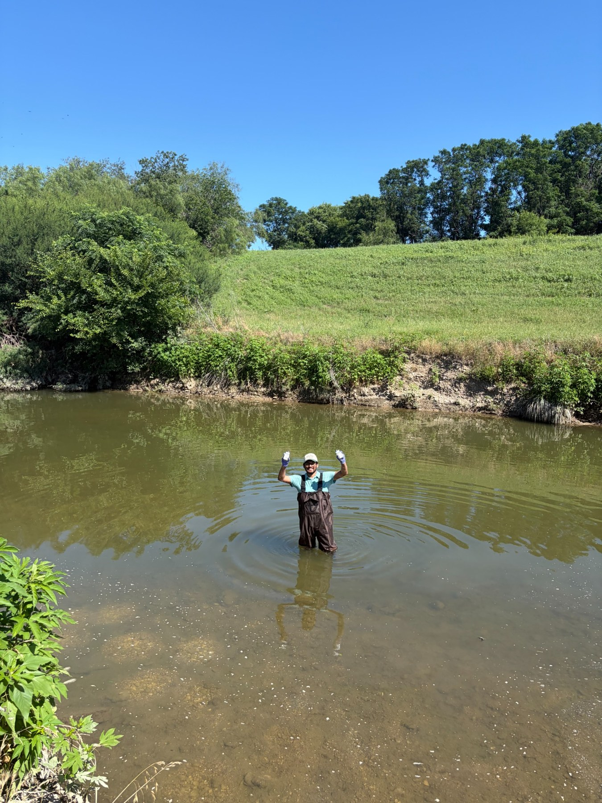
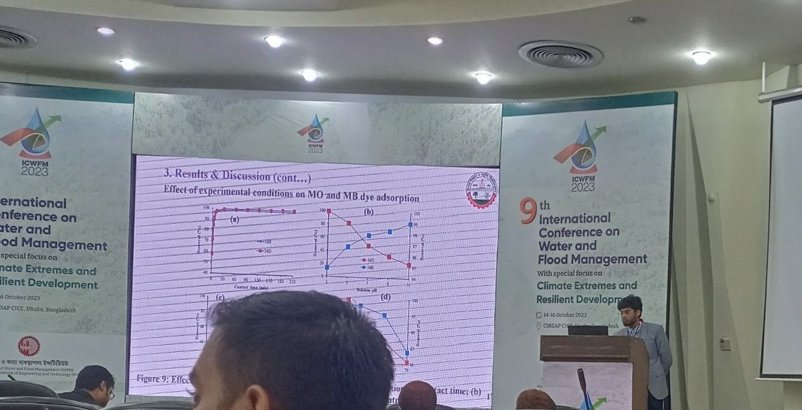
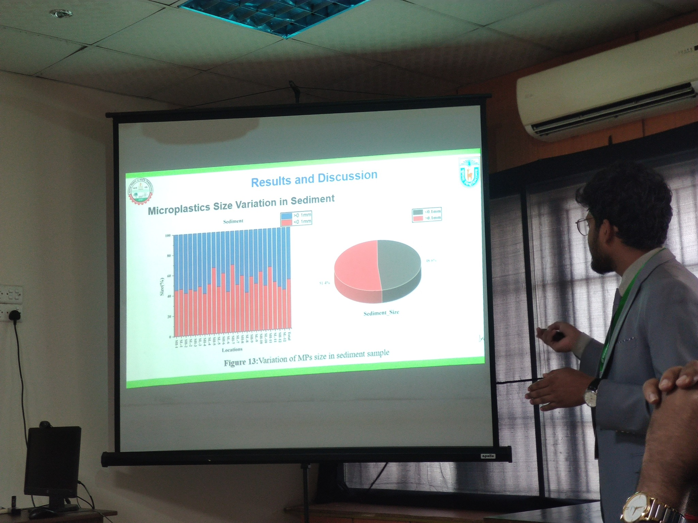
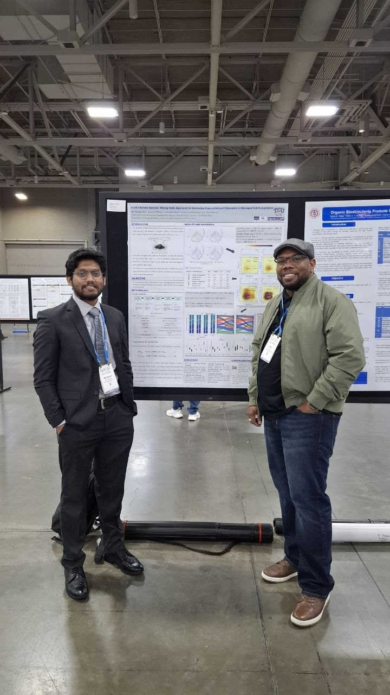
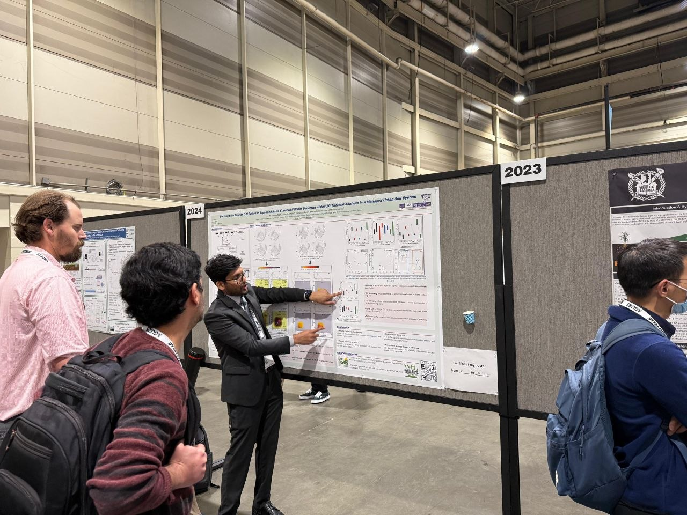
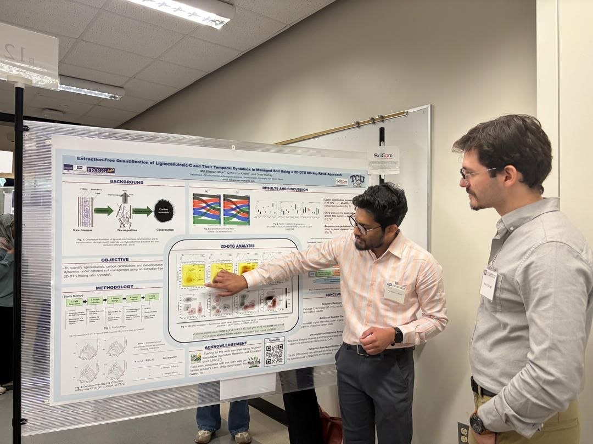
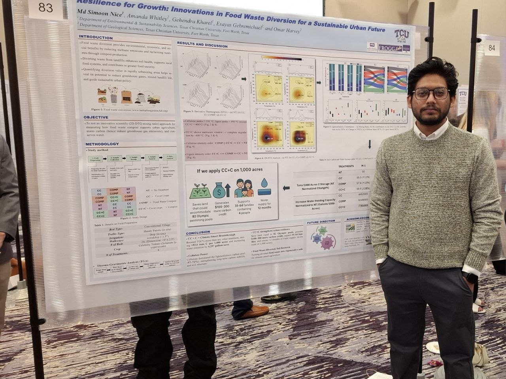

⌬
PFAS & Emerging Contaminants
Environmental fate, transport, transformation, analytical interpretation, exposure, and treatment of PFAS and other emerging contaminants.
PFAS · FATE · TREATMENTI am Md Simoon Nice, an environmental researcher studying how human activities affect natural systems and how science can support practical, sustainable solutions. My current research focuses on PFAS and other emerging contaminants across water, soil, and interconnected environmental systems.

I am an environmental researcher interested in understanding how contaminants move through environmental systems, how they interact with natural materials, and how science can help develop sustainable solutions. My research interests include emerging pollutants, microplastics, PFAS, water and wastewater treatment, environmental pollution and risk assessment, and soil carbon dynamics.
My graduate research at Texas Christian University included work on a USDA-funded sustainable soil resource management project examining soil carbon dynamics in managed urban agricultural soils. I also contributed to surface-water PFAS research in the Trinity River headwaters in Texas.
My research experience spans field sampling, laboratory experiments, environmental data analysis, scientific writing, and analytical characterization. Techniques and tools used across my work include thermogravimetric analysis (TGA/DTG), Raman spectroscopy, ICP-based elemental analysis, FTIR, SEM/EDX, statistical analysis, machine learning applications, GIS, R, and SPSS.
I am currently pursuing a Ph.D. in Environmental Engineering at New Jersey Institute of Technology, where my work focuses on PFAS and emerging contaminants.
Connecting environmental processes with practical solutions.
Environmental fate, transport, transformation, analytical interpretation, exposure, and treatment of PFAS and other emerging contaminants.
PFAS · FATE · TREATMENTContaminant behavior, monitoring, treatment approaches, and water-quality assessment across environmental and engineered systems.
WATER QUALITY · TREATMENTOccurrence, characterization, source apportionment, ecological and human-health risk, and interactions with other contaminants.
MICROPLASTICS · RISKSoil organic matter composition, lignocellulosic carbon, sustainable agriculture, and management practices supporting resilient urban soils.
SOIL · CARBON · SUSTAINABILITY
My work combines field observations, environmental sampling, laboratory characterization, and quantitative analysis to connect measured contaminants with the environmental processes controlling their behavior.
Selected research projects spanning emerging contaminants, water quality, soil carbon dynamics, and environmental pollution.
Research on PFAS and other emerging contaminants, with emphasis on environmental fate, behavior, analytical characterization, and treatment in environmental systems.
Investigated soil carbon dynamics in managed urban agricultural soils, including cover-crop and compost treatments. Applied thermal analysis and 2D-DTG approaches to characterize lignocellulosic-carbon dynamics and evaluate implications for carbon storage and soil-water retention.
Investigated PFAS occurrence in surface waters through environmental sampling and analytical-data interpretation, including reproducible treatment of left-censored measurements below analytical detection limits.
Contributed to research on microplastics, potentially toxic elements, environmental pollution, adsorption and remediation, ecological risk assessment, and environmental sampling across multiple matrices.
Selected works; the complete and continuously updated record is available through my research profiles.
Portia T. Asare, Gehendra Kharel, Md Simoon Nice, Brendan L. Lavy, Michele Birmingham, Omar R. Harvey
DOI / article ↗Holly A. Gould, Gehendra Kharel, Jaehak Jeong, et al., Md Simoon Nice
DOI / article ↗Pragga Chowdhury, Khandakar Rashedul Islam, Partha Chandra Debnath, et al.
DOI / article ↗Aditi Biswas, Partha Chandra Debnath, Khandakar Rashedul Islam, et al.
DOI / article ↗Md Simoon Nice, Tapos Kumar Chakraborty, Gehendra Kharel, et al.
DOI / article ↗Tapos Kumar Chakraborty, Md Simoon Nice, Md Sozibur Rahman, et al.
DOI / article ↗Tapos Kumar Chakraborty, Md Sozibur Rahman, Md Simoon Nice, et al.
DOI / article ↗Mst. Shamima Akter, Tapos Kumar Chakraborty, Gopal Chandra Ghosh, Md Simoon Nice, et al.
DOI / article ↗For a complete and up-to-date list of publications, visit my Google Scholar or ORCID profile.
Sharing research on microplastics, soil carbon dynamics, environmental contaminants, and sustainable resource management.






I contribute to peer review across environmental science, pollution, sustainability, and contaminant research. Reviewer activity and journal records continue to evolve, so current profiles provide the latest record.
EnviroSyn Lab is my personal research platform for organizing and communicating work on soil–water–carbon interactions and emerging contaminants. It reflects a long-term vision of building an interdisciplinary research group connecting environmental chemistry, contaminant fate, treatment, and sustainable resource management.